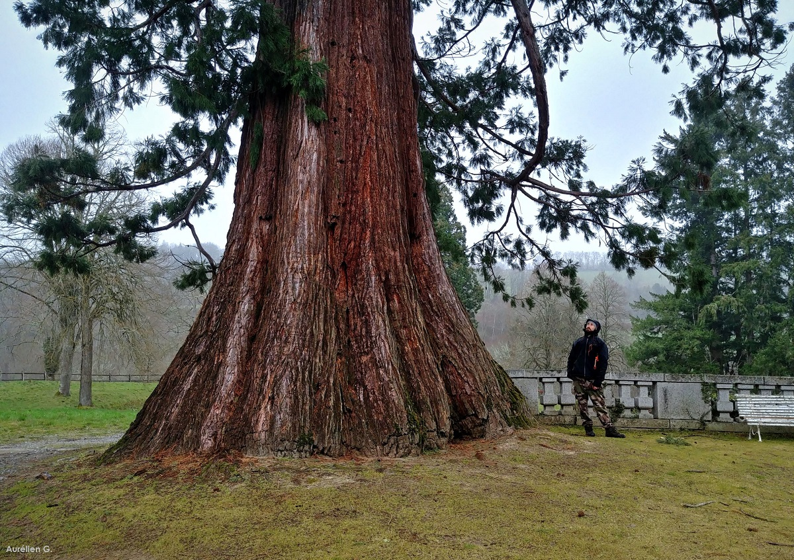

Gérez et visualisez notre patrimoine naturel
Plateforme moderne pour recenser, analyser et protéger les 9 915 arbres de Saint-Quentin grâce à la donnée et à l'intelligence artificielle.
Aperçu du patrimoine
Arbres recensés
9 915
Espèces uniques
187
Quartiers couverts
24
Arbres remarquables
312
Hauteur moyenne
8.4 m
Feuillus
7 842
Conifères
2 073
Répartition par quartier
Nombre d'arbres par secteur de la ville
Top espèces
Les essences les plus représentées